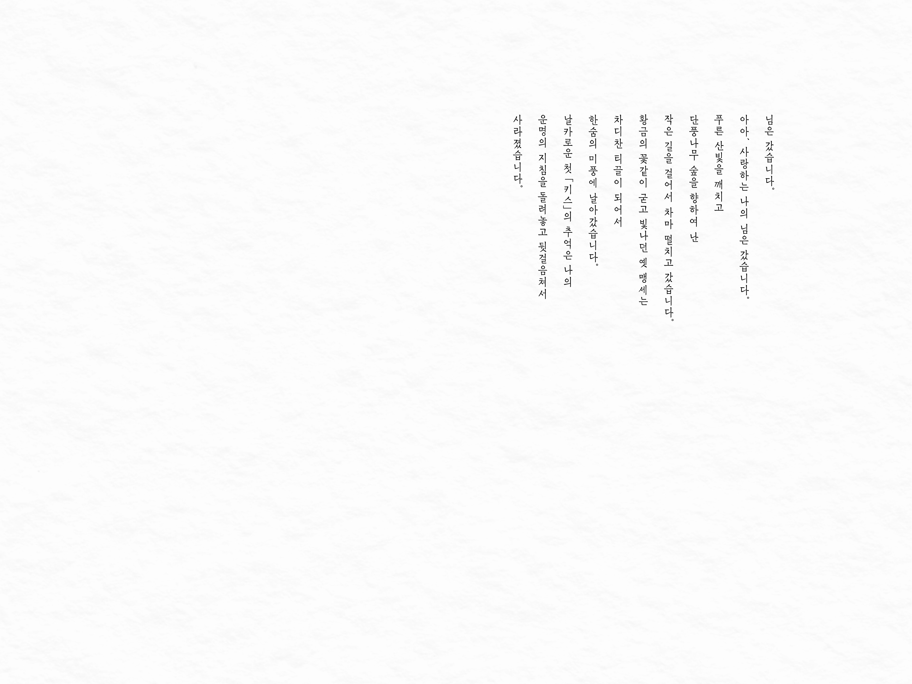
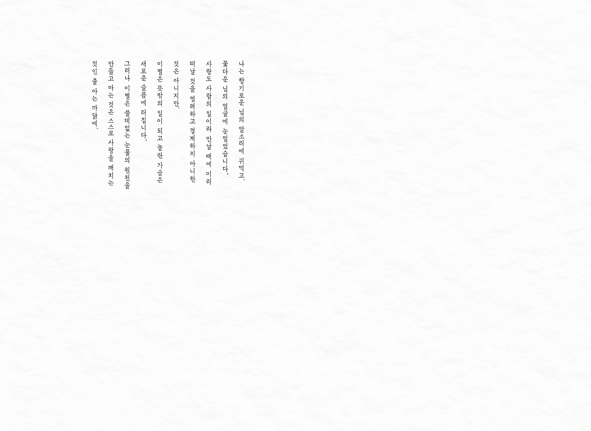
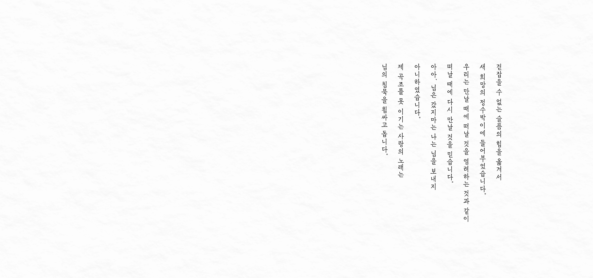
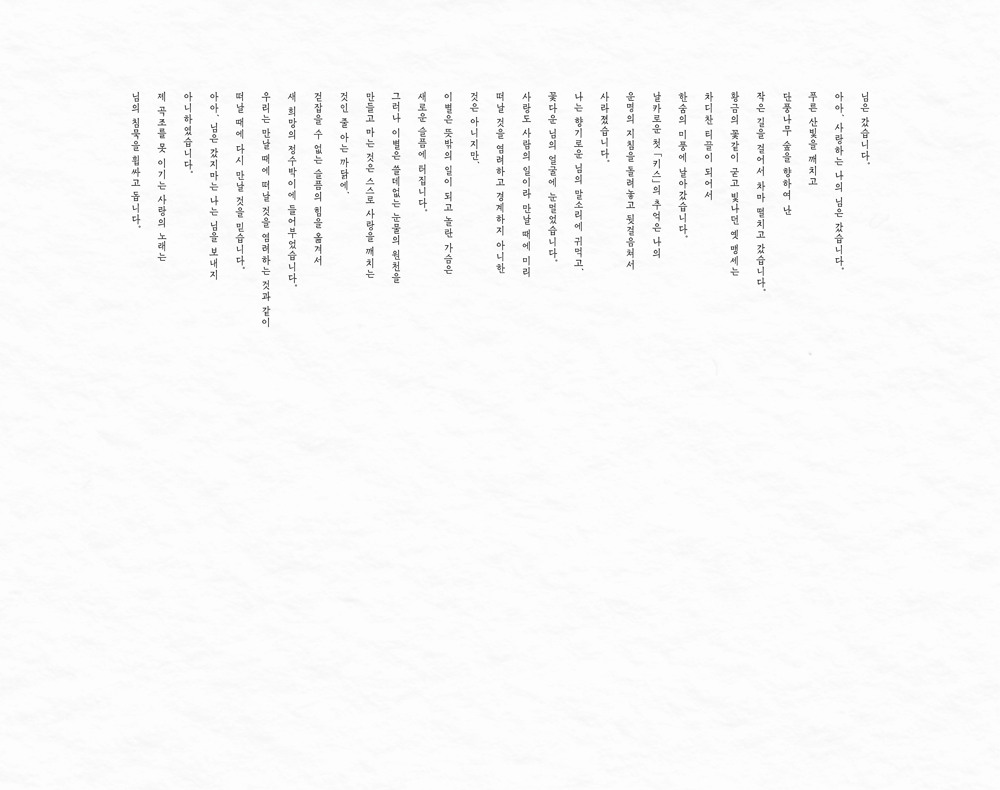
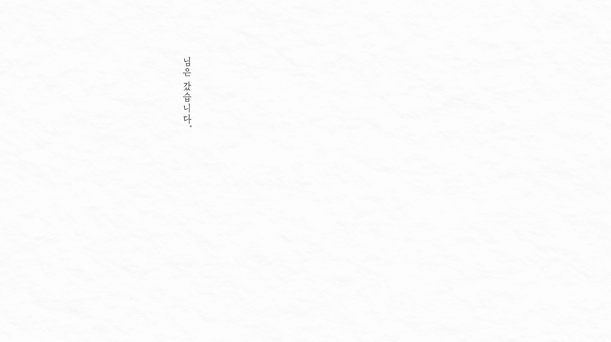
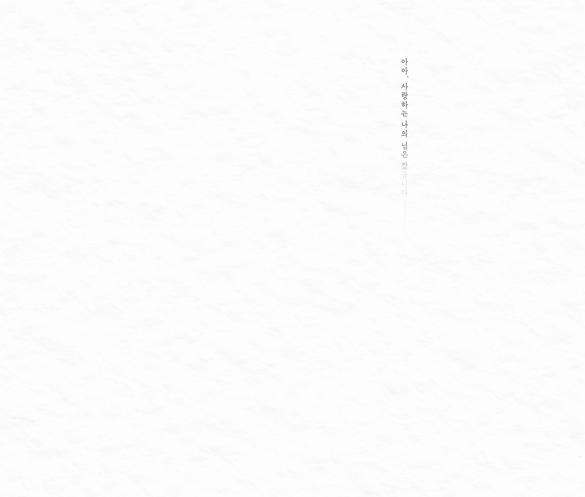
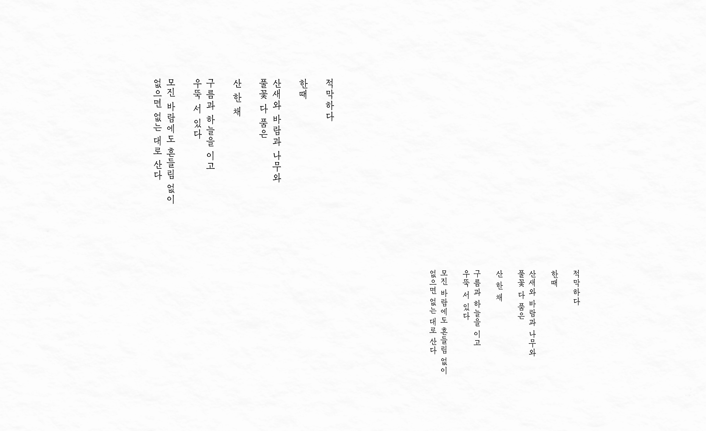
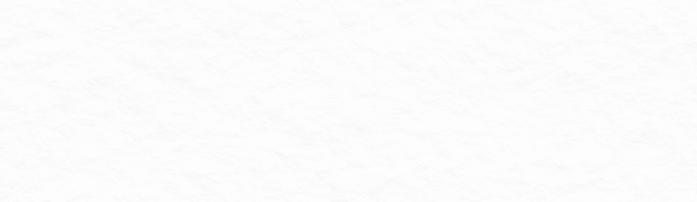
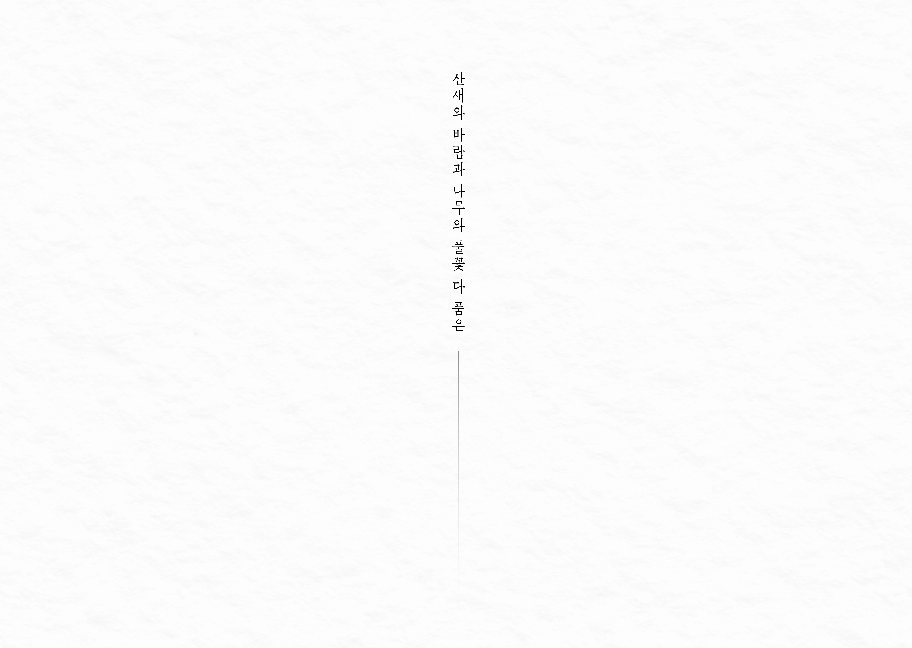
 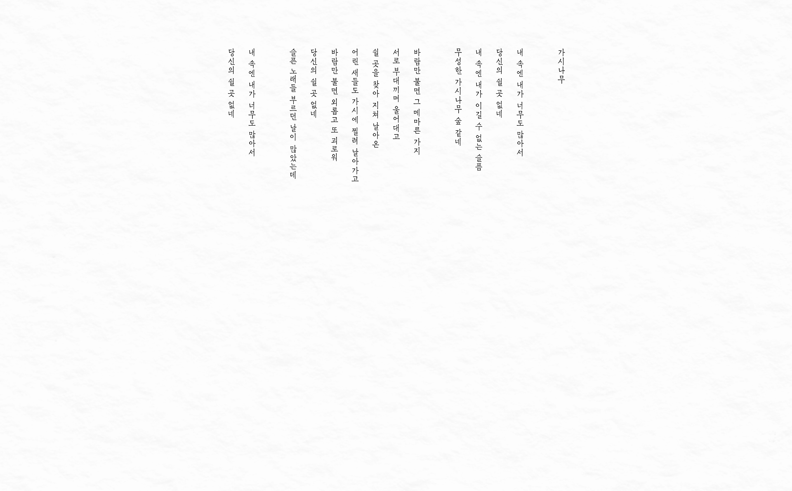
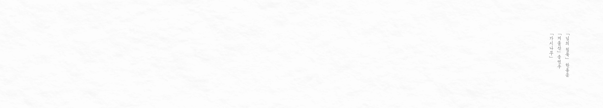
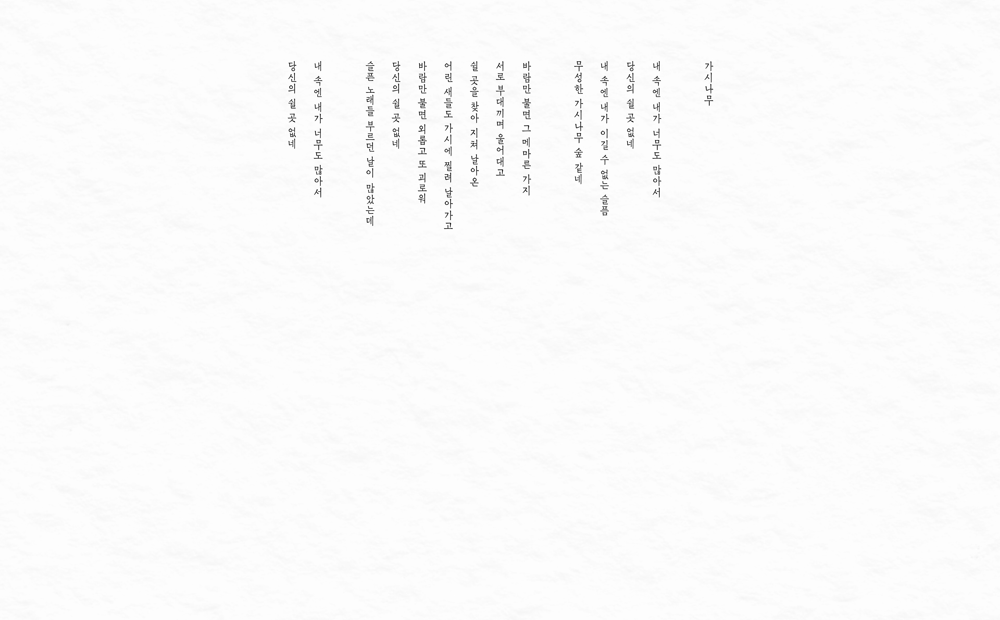
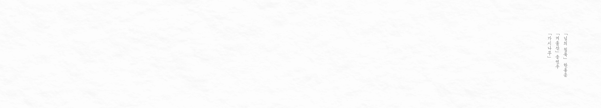
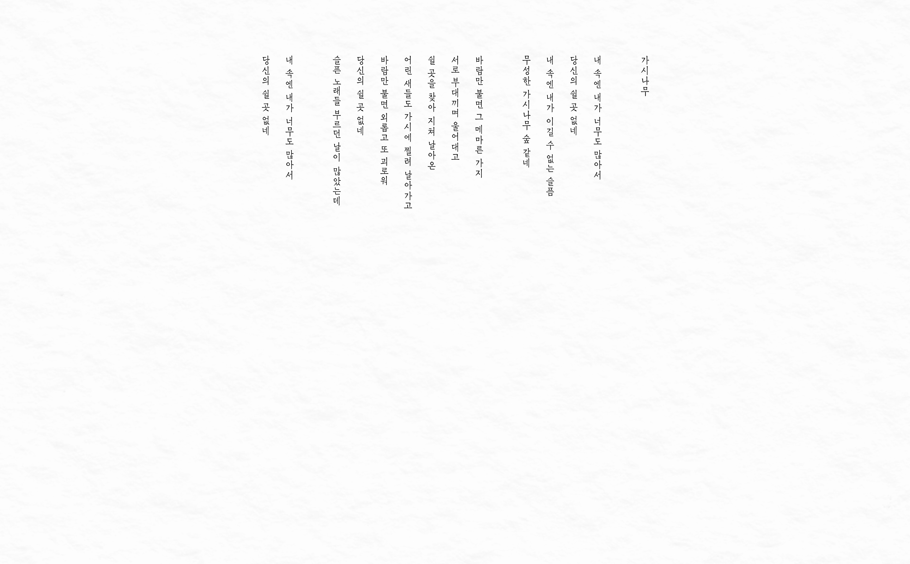
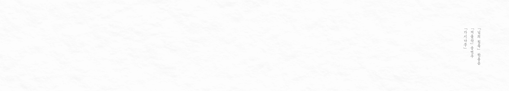
설향
〈설향〉은 최초의 한글 새활자인 「최지혁체」를 뼈대 삼아 그린 세로쓰기 글자체다.
「최지혁체」는 받침의 유무에 따라 글자의 높낮이가 크게 달라지는 구조로 세로로 긴 형태와 특유의 날렵한 인상을 가진다. 이를 기반으로 한 〈설향〉 역시 가변 높이 서체로, 자소와 글자 간의 크기 편차를 조정하고 있다.
획의 표현은 수나라 인수 3년(603년)에 쓰인 『소효자 묘지명』을 재해석하였는데 준엄하면서도 날카로운 획의 형태가 표현하고자 하는 인상과 잘 어우러진다고 생각했다. 「최지혁체」의 구조적 특징을 살리는 것에 초점을 두어 획 표현은 최소화하였으나 필획은 도드라지게 그렸다. 또한 획의 시작과 끝, 그리고 꺾임을 날렵하게 하여 서정적이고 가냘픈 인상을 담아내려 했다.
〈설향〉의 권장 사용 크기는 10~12pt이다. 옛 시나 서정성이 담긴 긴 호흡의 글에 사용되길 바라며, 세로쓰기 서체에서만 느낄 수 있는 멋스러움을 물씬 느끼길 바란다.
이지윤
이지윤은 책과 종이, 그리고 글자를 좋아하는 교육학과 영어영문 졸업생이다. 출판사에서 편집 디자이너로 일하다 현재는 폰트 회사에 다니고 있다. 누군가에게 도움이 될 만한 서체를 만드는 것이 목표이며, 먼 훗날엔 서체를 가르치는 일을 하고 싶다.